Which of the following is a consideration when enabling the policy setting shown in the screenshot below?
High number of repetitive log entriesIncreased firewall rule maintenance costs
Inability to handle encryption
Lack of higher protocol context
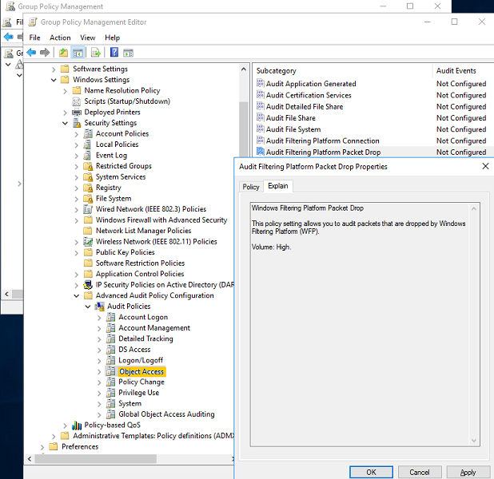
Consider the chart in the image depicting repetitive DNS calls. As shown in the legend, the blue bars represent the TTL number and the orange bar represents the rate of response. Which user's graph depicts fast fluxing?
User 1User 3
User 2
User 4
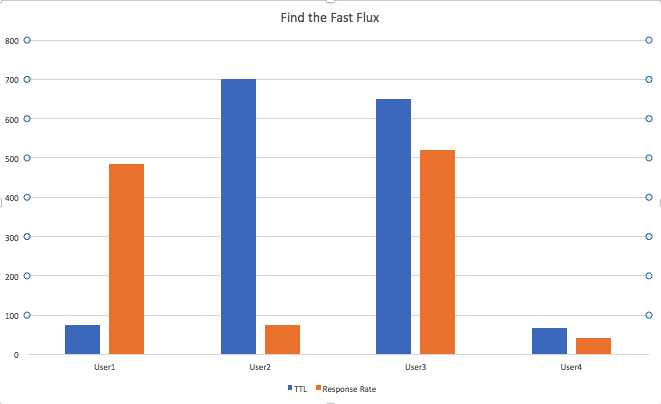
What type of log component is Logstash?
Log agentLog broker
Log aggregator
Log search GUI
Which of the following can be determined using Windows logs from the System channel?
A count of the number of USB devices plugged into a workstation for the first timeThe length of time a specific USB keyboard has been plugged into a computer
The number of times a user has reinserted a USB flash drive into a laptop
An analyst wants to receive more timely alerts with regard to brute force password attacks. Which of the following alert types will he use?
Alert on matchAlert on match excluding known criteria
Repetitive matches
New or changed fields
The log in the image was collected from an IIS server. What is the log's format?
W3CNCSA
IIS
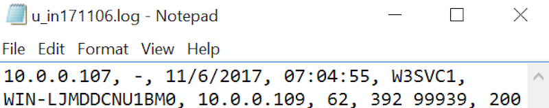
Which technique can detect data exfiltration from multiple locations or hosts on a network?
HoneytokenReverse analysis
Sinkhole
Tarpit
Which of the following attacks are built-in protections such as ASLR, Linux kernel patches like grsecurity, and Windows toolkits like EMET, designed to prevent?
Backdoor listeners that bypass firewall ingress filtersExecutables that randomize their name to avoid signature detection
Exploit code that injects itself into guessable memory locations
Malware that causes modification's to an existing file's hash
A user wanting to visit the www.giaccorp.org site, accidentally types www.gaiccrop.org into the browser window instead. If www.gaiccrop.org does not exist, what will happen?
The client's software will autocorrect the domain name
The browser will attempt a reverse DNS lookup instead
An HTTP 500 error will be displayed in the browser
Which Logstash filter plugin is useful for common field manipulation such as field type conversions?
translatemutate
dissect
split
Which of the following ways can a network access control (NAC) device authenticate a client on an enterprise LAN?
DHCP fingerprintOpen ports
DNS hostname
IP address
An organization is purchasing a log collection and aggregation solution. Which of the following is the best practice method for calculating the organization's events per second?
Use metrics for a similarly-sized organizationCount the number of workstation endpoints in the organization and multiply their EPS by peak volume
Implement a proof of concept and collect data over a sample time period
Use the solution vendor's recommendations for maximum capacity
An analyst is working in an environment with Windows 7 hosts and where syslog is used to collect logs to a central log server. What limitation is introduced by this environment's configuration?
The EVT log files must be converted to EVTX before storageSyslog requires JavaScript Object Notation
Some EVTX fields may not be captured
Windows 7 logs use fixed fields
Which of the following log agent features can be used to create a log relay?
Log bufferingData diode support
Server mode
Priority routing
Which of the following services must be running in order to use Windows Event Forwarding?
Windows Event CollectorWindows Error Reporting Service
Performance Logs & Alerts
Windows Insider Service
An administrator creates a hidden directory with a file named passwords.txt in it on a Windows system then enables auditing for that folder. What action are they attempting to detect?
Object enumerationPrivilege escalation
Time manipulation
Malicious accounts
What is the potential security risk with the information retrieval method shown below?
ruby {
code => "sid = event.get('sid');
event.set('rule', `cat /etc/nsm/rules/*.rules | grep sid:#{sid}`)"
}
Race Condition
Cross-Site scripting
SQL injection
What is the function of the PRI field in syslog?
To validate the integrity of the syslog data comparing a local log to a network logTo indicate the version of syslog being used by the sending host
To relay the severity and facility code of a syslog file sent over the network
To facilitate a conversion of syslog to syslog-NG
An attacker unleashes a zero-day exploit which starts a service with a randomly generated name on a server in the firm's DMZ. Which type of alert will this trigger?
Low fluctuationAlert on match
New or changed field
Aggregation threshold
What is the most efficient way to filter traffic with a destination of a specific company?
Autonomous System NumberNetwork subnet
IP Address
GeoIP location
User Behavior Analysis (UBA) relies on which of the following for decision making?
Access control listsMalware signatures
File integrity hashing
Anomaly scoring
Which of the following is a drawback to using network extraction versus traditional log collection?
Needs changes to system servicesGenerates logs only for systems running the correct agent
Requires network visibility
Produces inconsistent log format
What binary format is used for logging with Snort?
UnisonUnified2
UniConverter
Unimarc
Which of the following is a prerequisite for using a network extraction sensor?
Management VLANSyslog server
Port mirror
VPN support
Based on the closure codes applied to the rules shown below, which of the rules triggers on a network scan?
Rule 1Rule 4
Rule 3
Rule 2
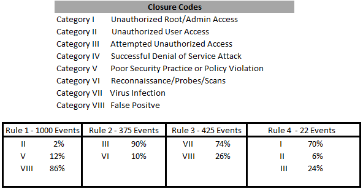
The configuration shown below enables logging to dns.evtx for which type of events?
Packet contentsTransport protocols
DNS server events
Query responses
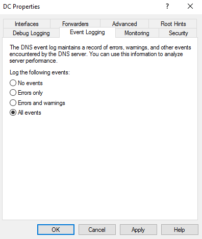
Which record result returned by the search technique shown below indicates malicious behavior?
tags:smtp AND domain:darnantes.org~ -domain:darnantes.org
darnan+es.org
darnantes.org
smtp.darnantes.org
An analyst is reviewing the AppLocker EXE and DLL log in Event Viewer shown below. Which of the following is the reason that it is populated with only Event ID 8003 events?
Enforcement setting is Audit only in the GPOHKLM:\\Software\\Policies\\Microsoft\\Windows\\AppLocker\\Enforcement set to 1
Enforcement setting is Not configured in the GPO
HKLM:\\Software\\Microsoft\\Windows\\SrpV2\\Enforcement set to 1

Which of the following log enrichment techniques can be used to simplify the search shown below?
Host:evil_corp OR Hostname:evil_corp OR server_name:evil_corp OR servername:evil_corp
Use the Logstash tcp plugin to direct logs from the evil_corp server to a specific port
Apply a tag called "evil_corp" to each data source sending logs referencing the server
Use the Logstash mutate plugin to rename all the fields used in the search to a common field name
Review the image below. Which of the following devices should perform log parsing and enrichment?
BrokerAggregator One
Storage
Aggregator Two
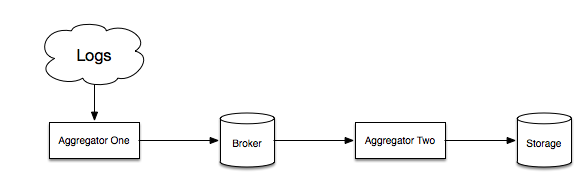
An administrator is reviewing an SNMP hardware log and she notices a new asset tag with an unfamiliar MAC address on a workstation subnet. Which of the following can she be certain that she has found?
An unauthorized iPadA C2 server
An anomaly
A false positive
Which HTTP method can an analyst use to see information like content type, host, and origin, without pulling the message body?
HEADGET
PUT
OPTIONS
What is the purpose of a log broker in a SIEM environment?
Storage device to provide space for archived eventsCollection device to pull logs from an agent-less host
Parsing device to ensure that all log fields are defined
Overflow device to temporarily retain logs during busy times
An analyst is determining the impact that different types of logs will have on the firm's SIEM. What does the following stdin plugin allow an analyst to do?
input {
stdin {
}
}
output {
stdout {
}
}
Enter logs manually
Specify a file path of logs to process
Name a specific file to be ingested
An administrator is reviewing the Iptables rules shown below for installation on a Linux NTP server. Which of the following does the option --log-level do?
iptables -A INPUT -i eth0 -j ACCEPT
iptables -A OUTPUT -o eth0 -j ACCEPT
iptables -A INPUT -m conntrack - ctstate ESTABLISHED,RELATED -j ACCEPT
iptables -A INPUT -m conntrack - ctstate INVALID -j DROP
iptables -A INPUT -p tcp - dport 22 -m conntrack - ctstate NEW,ESTABLISHED -j ACCEPT
iptables -A INPUT -p udp - dport 123 -m conntrack - ctstate NEW,ESTABLISHED -j ACCEPT
iptables -N LOGGING
iptables -A INPUT -j LOGGING
iptables -A OUTPUT -j LOGGING
iptables -A LOGGING -m limit - limit 5/min -j LOG -log-prefix "IPTables-Dropped:" --log-level 4
iptables -A LOGGING -j DROP
Log the message with the universal Microsoft logging level
Log the message with the specified severity level
Log the message with the specified facility value
Which of the following is a valid performance consideration when configuring Logstash to send logs to multiple output destinations?
There is a limit of 3 output destinations for each logA log must be parsed one time for each output destination
Multiple aggregators are required to send a log to multiple outputs
A log remains active in memory until it is sent to all outputs
An administrator is reviewing a pfirewall log file shown below on a Windows 10 desktop. In which format are pfirewall.log files stored?
PlaintextSQL Server 2008 R2 database
Extensible Storage Engine (ESE) database
XML

Which port would an administrator expect to use to collect logs from a printer?
TCP/23UDP/514
UDP/1812
TCP/48
An analyst is reviewing data from a number of passive detection sources on the firm's network. Which of the following passive detection sources is shown below?
Switch ARP TableRouter NAT Table
Switch CAM Table
Server DHCP Table
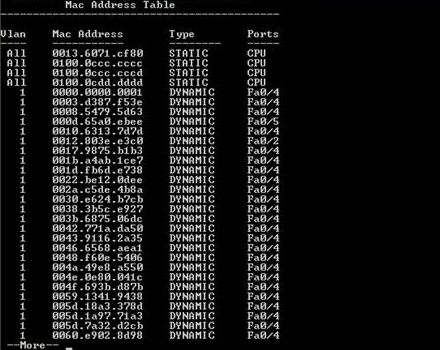
What should be added to the following fuzzy search to limit excessive alerts?
tags:dns AND domain:giac.org~
-domain:giac.org
severity:alert
An organization reports that they sometimes have a peak volume of 7 times their normal events per second rate. Based on 4.5 million events per day, what is the organization's peak EPS?
Round up to the next whole number.
3125365
642
53
Which of the following is a WORM-based storage platform?
ElasticsearchSphinx
Oracle MySQL
Xapian
Which of the following Elasticsearch field types is used in the function shown below?
PUT my-index-000001
{
"mappings": {
"properties": {
"price": {
"type": "scaled_float",
"scaling_factor": 100
}
}
}
}
NUMERIC
RANGE
BINARY
A Sysmon network connection event log includes which of the following?
Number of times the connection has been initiatedBytes transmitted/received during the connection
Total duration of the network connection
Process ID/GUID associated with the connection
Which of the following log files is the source of the grep output shown below?
utmpkern.log
auth.log
dmesg
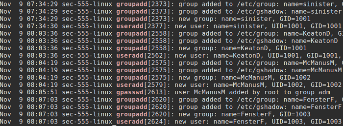
Which of the HTTP clients in the log shown below made a bad page request?
5.83.131.10393.180.71.3
80.91.33.133
217.168.17.5
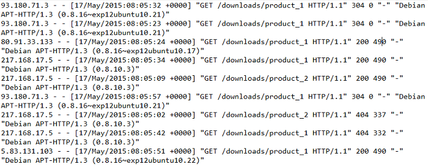
Which of the following tools allows an analyst to perform dynamic malware analysis and examine the results?
Anti virusIntrusion detection system
Sandbox
Dissassemblers
Which of the following will be parsed correctly by the Logstash plugin shown?
filter {
csv {
columns => ["name","height","age"]
separator => "|"
add_tag => "stats"
}
}
Comma-separated data found in the stats field
Pipe-separated data found in the message field
Comma-separated data found in the message field
Which of the following should be treated as an anomaly rather than an alert?
Successful file download with a matching malware signatureSuccessful user login from an unknown wireless network
Failed server login attempts from an unauthorized user
Failed file upload to a blocked exfiltration website
An analyst is using fuzzy searching techniques on network service logs to find inbound phishing emails coming from domains that are similar to a company's domain. Which network service will produce the most accurate results?
SMTPHTTP
DNS
IMAP
When performing reverse analysis, which of the following is recommended for test systems?
Avoid the complexity of virtualization with physical hostsTemporarily place systems on a production subnet
Execute malware with local administrator privileges
Configure systems to mirror production systems
If an organization estimates their workstations generate 1.3 billion events per day what is the average events per second (EPS)?
Round up the answer to the next whole number.
15,04736,112
10,034
13,001
Which type of device generated the following packet data?
10/24/2017 12:02:45 PM 051b PACKET 000000033D754A70 UDP Rcv 10.5.1.50 1007 Q [0001 D NOERROR] A (3)www(4)giac(3)com(0)
DNS server
Web proxy
Browser cache
The output of a Windows 10 firewall log file has been filtered for review. What can a SIEM administrator do upon log ingestion to speed up searches of this data?
Create a new field including both source and destination IP addresses for each log entry that can be used as an indexCreate a new index with a unique, randomly generated number for each log entry
Remove duplicate IP addresses from the log entries to reduce the number of logs going into the SIEM
Tag the src-port as a unique identifier for each log item

Which of the following would be tagged by the query shown below in a Microsoft environment?
event_type:flow AND destination_port:636
Log Aggregator
Domain controller
SSH server
What is a desirable log storage characteristic when evaluating a SIEM solution?
Consistency in updating and deleting dataIntegrity checking solutions (ACID)
Write-once read-many (WORM) solutions
Common solutions like MySQL
Which of the following is an advantage of performing reverse engineering analysis on production systems instead of test systems?
Fewer false positivesRequirement to capture logs under normal conditions is eliminated
Amount of data that needs to be processed is reduced
Analysis can be more aggressive
A company has 10 subnets based on departments and 192.168.0.0/24 is assigned to the HR department. The security team needs the ability to track any log with an IP address in this range and monitor the department's workstations for lateral movement. This provides a use case for which of the following?
AgentsTags
Codecs
Subscriptions
Which of the following accurately describes Windows Event logs?
Using Windows Event forwarding limits interception and impersonation attacksThe same Event ID can represent more than one event
Windows can not natively take automated actions based on Windows Events
Event logs from systems later than Vista are text based
Which Windows event log records an attacker inserting a USB keyboard device?
Microsoft-Windows-DeviceSyncMicrosoft-Windows-ActionQueue
Microsoft-Windows-NetworkAccessProtection
Microsoft-Windows-DriverFrameworks-UserMode
An analyst finds far more one-offs in a long tail analysis software report of the firm's servers and desktops than she expected. Which of the following would reduce the time required to investigate software exceptions?
Break down the report by geographic locationEnsure that the patch management servers are synchronized
Break down the report by hardware manufacturer
Filter out servers from the dataset
How is the Windows auditpol tool used in an enterprise environment?
To recommend baseline log settingsTo package event logs for scripted collection
To locate undocumented endpoint systems
To collect and establish log settings on a standalone endpoint
Which of the following is a prerequisite for defining an anomaly?
Profiling user activity for a predefined periodDeployment of machine learning appliances
Filtering noise from major log generating hosts
Ability to identify normal conditions
Which discovery technique focuses on ignoring known good events and examining all other information in the data set?
Anomaly detectionLong tail analysis
Deny lists
Allow lists
Which of the following is the most likely purpose of the activity captured in the following snippet from a Windows event log?
A service was installed in the system.
Service Name: m$sqlpipe
Service File Name: cmd.exe /c echo > \\.\Pipe\atstake
Service Type: user mode service
Service Start Type: Automatic (Delayed Start)
Service Account: LocalSystem
Covert C2 tunnel
Privilege escalation attack
SQL injection exploit
What does the filter in the image accomplish?
Monitors the .bro_dhcp_sincedb fileSets the output path to .bro_dhcp_sincedb
Monitors the dhcp.log file
Sets the output path to dhcp.log
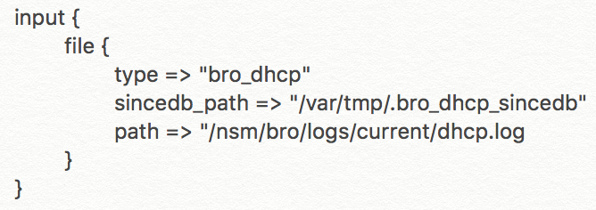
A custom application writes logs to C:\Program Files (x86)\Custom_App\Logs\customlogfile.txt. How can these logs be recorded to the Windows XML Event Log?
Enable the Analytic and Debug channel which will natively read .txt based logs into the Event ViewerRun SCM as a scheduled task to convert the customlogfile.txt data into the EVTX format
Use a PowerShell script that monitors customlogfile.txt and converts the data to EVTX
Use auditpol.exe to configure Object Access > Audit Application Generated to poll the customlogfile.txt file
An analyst is examining a piece of code shown below from an artifact that was found in malware C2. What is the purpose of the function?
Domain Generation AlgorithmPseudo Random Number Generator
Fast Flux scheduler
Beacon interval generator
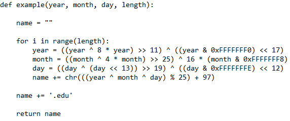
Which logging option contains both the input and output of commands executed when Powershell is run interactively?
TranscriptionScript Block
Module
Command Line
Which storage media property offers the quickest recording, indexing, and searching of logs?
WORM-basedACID-compliant
RESTful
RDMS-based
Which of the following discovery techniques identifies normal events that occur infrequently?
Regression analysisLong tail analysis
Poisson distribution
Anomaly detection
Which syslog field is one of the two used when calculating the priority of a syslog message?
facility
action
module
Which of the following tasks would an authenticated vulnerability scan perform that a simple network scan would not?
Report protocols and ports in use on the networkFind versions of services running on machines
Report registry key values from machines
An analyst is executing queries in Kibana like the one shown below. For which of the following are they searching?
Illegal SMTP serversPhishing domains
Unauthorized DNS zone transfers
Copycat websites

In a container environment, what is a sidecar?
A container that collects logs on behalf of another containerA data volume that acts as persistent log storage
A service daemon that records changes to the environment
A logging driver that captures the output of stdout and stderr